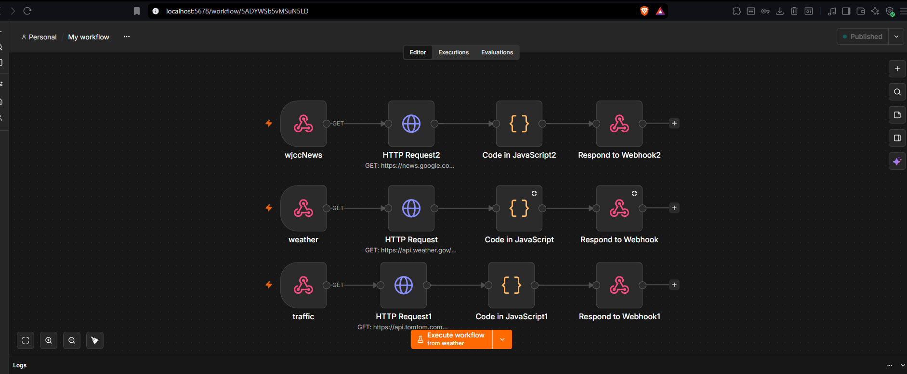
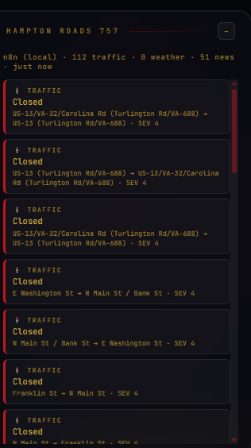
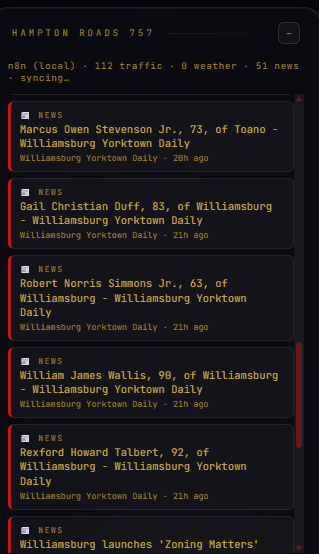
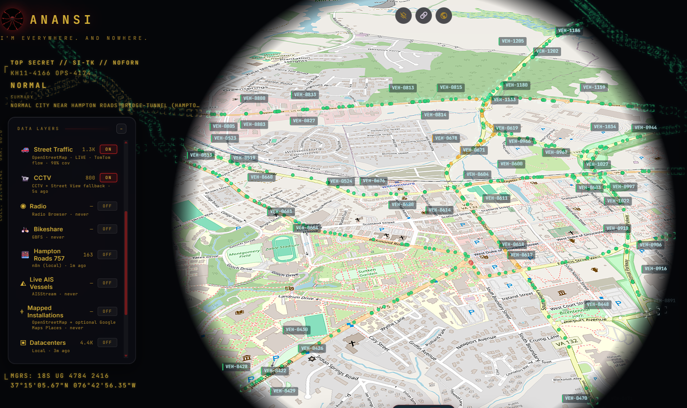

Anansi is a self-hosted, real-time geospatial dashboard built for the Hampton Roads / Historic Triangle region of Virginia. A self-hosted n8n automation server handling intelligence ingestion, feeding into God's Eye View, an open-source CesiumJS 3D globe platform, so live public data — traffic, weather, local news — renders as one operational picture instead of five separate tabs.
The goal wasn't just a pretty map. It's closer to a lightweight SOC-style situational awareness tool: multiple independent feeds, normalized into one schema, polled continuously, rendered without a manual refresh.
| Asset | Function |
|---|---|
| Visualization Platform | CesiumJS 3D globe (God's Eye View, rebranded Anansi) |
| Automation / ETL | Self-hosted n8n, deployed via Docker |
| Traffic Intel (Track 1) | n8n → TomTom Incident API, feeds Hampton Roads panel |
| Traffic Intel (Track 2) | Native TomTom Flow API — live vehicle position tracking on the globe |
| Road Geometry | Overpass API via self-hosted proxy, mirror-ordered |
| Weather Intel | n8n → NOAA / National Weather Service Alerts API |
| Local News Intel | n8n → Google News RSS, XML-parsed, geocoded by keyword match |
| Hampton Roads 757 Panel | Persistent right-rail feed (redesigned from a map layer) |
| Cover Identity | Custom UI theme, wordmark, original spider-mark logo |
Base platform deployed locally on Windows 11 (Node.js/Vite). Docker Desktop wouldn't start at first...turned out virtualization was disabled in the BIOS by default, so that had to get flipped on before the automation layer would come up at all.
n8n runs as a Docker container with its workflow data persisted in a named volume, so nothing gets wiped on restart. Each data source is its own workflow, triggered on-demand by webhook rather than a fixed schedule. The intent being upstream APIs only get hit when the dashboard's actually being viewed, not burning quota in the background for no reason.

Live incident data comes from TomTom's Traffic Incident Details API (v5), bounded to
Norfolk, Virginia Beach, Chesapeake, Portsmouth, Suffolk, Newport News, and Hampton, normalized
into a consistent {lat, lng, label, type, metadata} schema so it lines up with
everything else in the pipeline. Static incidents were the starting point — getting the TomTom
flow API working came later, and that's what actually drives the live vehicle tracking
overlay: individual moving markers on real Williamsburg area streets, continuously updating
rather than a stale snapshot.

NOAA's public Alerts API doesn't need a key, but it does need a descriptive
User-Agent header — skip it and the response is a silent 403 with nothing pointing
to why. That one took some digging since it's not documented anywhere obvious. NWS alerts are
zone-based rather than coordinate-based, so a lookup table maps known localities to
approximate coordinates to get them plotted on the map at all.
The original target was a Williamsburg news outlet's RSS feed directly, but the source actively blocks automated requests at the network level — 403 regardless of what headers get sent. Pivoted to a location-filtered Google News RSS query instead, which meant writing a raw regex-based XML parser rather than trusting n8n's built-in conversion node, since the actual output shape didn't match what the documentation implied. Obituary and real-estate listing noise gets filtered out at parse time — not useful for a situational-awareness feed.

This started as a Cesium map layer polling all three n8n webhooks and rendering colored dots on the globe. Found a real bug early: a single failed poll on enable was reverting the whole toggle back to OFF ("could not start cleanly") instead of degrading gracefully. Fixed so the layer stays on and retries automatically instead of failing hard on one bad request.
Added a Hampton Roads (757) location pill with five real landmarks — Nauticus, the Virginia Beach Oceanfront, the Bridge-Tunnel, Naval Station Norfolk, the Chrysler Museum — and hid every other preset city pill from the UI without deleting the underlying data, so CCTV and voice control still reference it under the hood.
The final version pulled the whole thing out of the data-layer system entirely — no more map dots, no ON/OFF toggle in Data Layers. It now lives as a persistent panel on the right rail: a live-scrolling feed of real traffic incidents, weather alerts, and news headlines, each with source, severity, and timestamp. Reads a lot better as an actual intelligence feed than a cluttered globe ever did.
Separate from the n8n incident pipeline, the base platform has its own native
TOMTOM_API_KEY, sitting commented-out in .env. Activating it to get
live vehicle-position tracking on the globe led straight into "traffic won't populate / stuck
at 0% coverage" — which turned out to be three separate, unrelated root causes stacked on top
of each other, not one. That's what made it a genuine troubleshooting exercise rather than a
quick fix.
1. Norton Antivirus's SSL inspection. Its own certificate wasn't trusted by Node,
producing intermittent UNABLE_TO_VERIFY_LEAF_SIGNATURE failures on outbound HTTPS
calls. Resolved by pointing NODE_EXTRA_CA_CERTS at Norton's own auto-maintained
certificate bundle, set as a persistent machine-level environment variable. That part is
machine-specific, so it's not in the repo.
2. Overpass mirror ordering. The first mirror tried
(overpass-api.de) was hard-hanging at the TCP level, eating the full 22-second
timeout before ever reaching one that actually worked. Reordering the mirror list to try the
working ones first cleared that up.
3. A second, completely unrelated bug: the Overpass proxy's User-Agent was still a
stale pre-rebrand string (gods-eye-view-overpass-proxy/1.0), and
overpass-api.de's abuse filter was hard-blocking it with a 406 on every request.
Had nothing to do with Norton...only surfaced by swapping that one header in isolation and
re-testing. Fixed to Anansi/1.0.
Cause-level logging went into both proxies (vite.config.js) so any future
failure surfaces the actual reason instead of a bare "fetch failed." A live firewall-off test
ruled out Norton's firewall specifically — behavior was identical either way, which confirmed
the User-Agent was the real missing piece for Overpass, not just a secondary symptom of the
SSL issue.
By the end of that session: TomTom flow, Overpass road geometry, and the Hampton Roads panel were all confirmed running on real data — 98+ live traffic incidents, real news headlines, clean coverage percentages instead of stuck zeros.
Full rebrand of the base platform UI, page title, config/branding strings (AI prompts,
User-Agent headers, console messages). Project docs and the original repo/YouTube links stayed
untouched, since those point to the real public source and deserve credit. Replaced logo,
Favicon, title bar, loading screen with an original red spider-mark SVG. Full
color pass: black/near-black backgrounds, gold text (#d4af37 primary,
#a8842a dimmer for secondary/hint text — checked both against WCAG contrast, 9.4:1
and 5.6:1), red (#c81e1e) for buttons, borders, and active states.
A follow-up pass caught a few spots the first sweep missed — icon SVGs with colors baked directly into the file instead of driven by CSS, the voice-control widget's waveform, the first-run modal, the command-dock borders, CCTV panel indicators. Subtitle changed to "I'm everywhere. And nowhere."

TRACK 1 — n8n (Docker, self-hosted)
├── Traffic → TomTom Incident API ─┐
├── Weather → NOAA Alerts API ├─→ normalized JSON via webhook
└── News → Google News RSS ─┘
│
▼
Hampton Roads 757 panel (right rail, live feed)
TRACK 2 — Native platform integrations
├── TomTom Flow API → live vehicle position tracking on the globe
└── Overpass API → real road geometry (self-hosted proxy, mirror-ordered)
Anansi (CesiumJS 3D globe, in-browser)
The n8n track is fully webhook-triggered rather than cron-scheduled — upstream APIs only get called when the panel's actually being viewed. The native track (TomTom flow, Overpass) runs independently inside the platform itself, with its own self-hosted proxy layer handling mirror selection and request headers.
UNABLE_TO_VERIFY_LEAF_SIGNATURE failures on outbound HTTPS
calls. Not a firewall issue — confirmed by testing with the firewall fully disabled and seeing
identical behavior. Fixed via NODE_EXTRA_CA_CERTS pointed at Norton's own
certificate bundle.Three of the traffic-related failures above looked identical from the outside — all presented as "coverage stuck at 0%." Isolating them meant changing one variable at a time — firewall off/on, header swap, mirror order — instead of assuming a single cause and stopping there.
A non-exhaustive list of what actually changed, for anyone who wants to check the work directly:
index.html style.css vite.config.js src/main.js src/ui.js src/hud.js src/locations.js src/data/traffic.js src/data/cctv.js src/data/bikeshare.js src/data/hamptonRoads757.js (new) src/voice/gevRealtime.js src/styles/anansi-logo.svg public/*.svg .env / .env.example
A public, general-purpose open-source visualization platform got turned into a purpose-built, live regional intelligence tool designing the ETL pipeline, working through real API and infrastructure issues as they came up, extending the platform's actual codebase with new functionality, and finishing with a fully custom identity. What's live now is a working, self-hosted, real-time dashboard built entirely on free-tier public data sources.